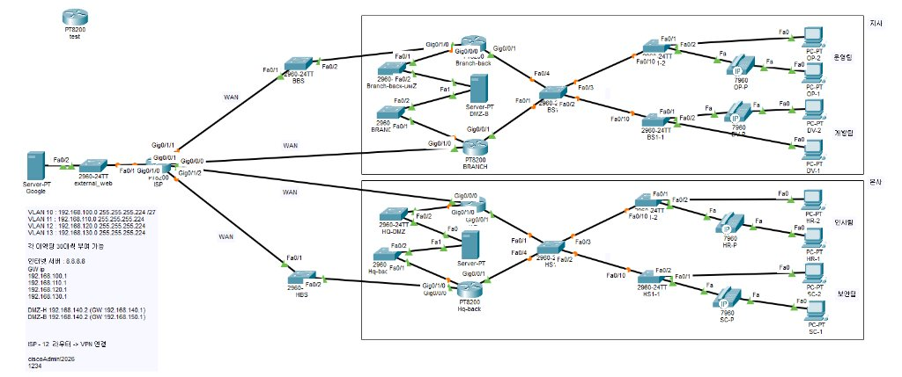

자기소개: 현장 기본기에서 기업망 인프라 구축까지
[자기소개]
야전 통신소의 L1 물리 배선부터 기업망 L3 이중화·VPN 인프라까지, 통신 단절의 원인을 끝까지 추적해 정상화하는 네트워크 엔지니어 김민승입니다. 실무에서 작동하지 않는 네트워크는 변명의 여지가
없다는 원칙을 바탕으로, 이론에 그치지 않고 현장의 물리 계층부터 단계적으로 인프라를 검증하며 서비스 안정성을 확보합니다.
[지속력과 현장 기본기]
육군 통신병 입대 후 야전 통신망 운용 역량을 체득하고자 복무를 연장해 전문하사로 임관, 총 2년간 야전 통신을 전담했습니다. 수송부 파견 당시 PC 인트라넷 단절 원인을 물리 계층(L1)부터 추적해
노후 케이블 탈피 및 RJ-45 잭 압착으로 즉시 복구했고, 한 달간 지속되던 안테나 전파 장애의 원인을 전파 간섭으로 규명하여 3m 이설로 해결했습니다. 회선 추적기로 수백 가닥 선로 속 포트를
식별하고 핑/경로를 모니터링하며 끝까지 물고 늘어지는 현장 문제해결 지속력을 길렀고, 이후 독학으로 영문 CCNA와 OPIc IH를 취득하며 이론과 실무의 기초를 다졌습니다.
[직군 간 협업]
3인(네트워크 1, 프론트엔드 1, 백엔드 1) 캡스톤 프로젝트에서 네트워크 인프라 구축을 전담했습니다. 개발 직군과의 원활한 연동을 위해 사내 표준 IP 대역과 화이트리스트 접근통제 룰셋을 명확히
문서화하여 공유했습니다. 백업 라우터 추가 후 VPN 터널 단절 등 돌발 이슈 발생 시에도, 패킷 흐름도를 함께 공유하며 디버깅을 주도해 직군 간 마찰 없이 개발 규격을 조율했습니다.
[기업망 구축 및 운영 관리]
본사-지사 4개 부서를 VLAN으로 분리하고 /27 서브넷 할당, Voice VLAN 연동, DMZ 포트포워딩 및 VPN 터널을 구축했습니다. 장애 모의 훈련 중 메인 노선 복구 시 원래
경로로 자동 복귀되지 않는 문제(Failback 실패)를 겪었을 때, 무리하게 설정을 덮어쓰다 기존 정상 망까지 꼬이는 시행착오를 경험했습니다. 이를 통해 운영 망에서 주먹구구식 설정 남발의 위험성을
깨닫고, 즉시 정상 동작이 확인된 백업 스크립트로 롤백하여 베이스라인을 사수했습니다. 해결하지 못한 복구 실패 한계는 보고서에 정직하게 기록하며, 유지보수 엔지니어의 핵심인 운영 안정성 최우선 원칙을
확립했습니다.
대표작 및 프로젝트
[캡스톤 보안 프로젝트] Sentra: 사내망 다계층 접근통제 시스템 및 실전 기업망 구축
팀
프로젝트 (3인: 네트워크 인프라 전담 / FE 1 / BE 1)
실제 기업 환경을 모사한 사내망 인프라 토폴로지를 전담 설계하고, 화이트리스트 접근통제, HSRP 게이트웨이 이중화, 본사-지사 간 VPN 망 구축 및 DMZ 구현 한계 분석을 수행한 프로젝트입니다.
실전 기업망 전담 제작
화이트리스트 접근통제
DMZ 한계 분석 및 우회
HSRP 게이트웨이 이중화
본사-지사 VPN 구성
부서별 VLAN 및 서브넷(/27)
Voice VLAN & PC Ping 정상화
화이트리스트 ACL (74건 차단)
포트포워딩 (Static NAT)
기술 분석 보고서

▲ 직접 전담 설계 및 구축한 본사(HQ) - 지사(BRANCH) 고가용성 이중화 기업망 토폴로지 (Packet Tracer 실측 환경)
-
부서별 L2/L3 망 분리 및 연동: 본사(인사·보안)-지사(운영·개발) 4개 부서를 VLAN 10~13으로 분리하고, 보안 강화를 위해 기존 /24 대역을
/27 서브넷 단위로 축소하여 정적 IP로 재구성. 스위치 트렁크 포트와 라우터 서브인터페이스로 부서망을 연동하고 Voice VLAN을 적용해, 전화기 내장 스위치 포트를 경유하는 업무용 PC의 데이터 트래픽(Ping) 정상 통신을 확립.
-
화이트리스트 접근통제(ACL) 및 DMZ 구축 한계 분석: 외부 경계 방화벽에서 비인가 접근 74건을 실측 차단하고
established 기반 상태 보존형 수신을 구현. 단, DMZ 서버의 경우 라우터 포트 부족과 인터페이스 설정 문제로 외부 포트포워딩 접속이 실패(Request Timeout)함을 확인하였으며, 이를 DMZ 전용 스위치 추가 증설 및 우회 연결 방안으로 분석해 보고서에 정리.
-
HSRP 게이트웨이 이중화 설계: 본사·지사에 각각 주 라우터와 보조 라우터를 배치하고 HSRP(Priority 110/100, Preempt) 가상 게이트웨이를 구축. 주 라우터나 회선 장애 발생 시 보조 라우터가 게이트웨이 역할을 넘겨받아 통신이 유지되도록 자동 절체(Failover) 경로를 실측 검증.
-
원격 지사 간 VPN 터널 구성: 공용 인터넷(ISP)을 경유하는 본사-지사 주 라우터 간에 VPN 터널을 수립. 지사 간 사내 업무 트래픽이 인터넷 구간에서도 주소 변환 없이 VPN 터널을 타고 안전하게 이동하도록 경로를 확보하고 패킷 송수신 검증.
-
장애 경험을 통한 운영 안정성 사수 (Failback & 형상 관리): 회선 장애 시 우회(Failover)는 동작했으나, 회선 복구 시 원래 경로로 자동 복귀되지 않는 복구(Failback) 실패 문제를 경험. 억지로 설정을 추가하다 망이 꼬이는 시행착오를 겪은 후, 정상 동작 백업 스크립트로 즉각 롤백하여 베이스라인을 사수하고 미해결 한계(SA 비선점성 및 시뮬레이터 제약)는 기술 분석 보고서에 정직하게 기록.
-
단계별 핑(Ping) 실측 검증 (성공 및 실패 구간 분리): 각 구간별 통신 테스트 결과, [사내 PC 간 VPN 통신] 및 [내부 PC의 외부 인터넷(구글) 웹서핑]은 패킷 손실 0건으로 정상 도달을 확인하였으나, [DMZ 서버 접속]은 포트 매핑 미스로 실패(Timeout)했음을 정확히 실측하여 보고서에 반영.
🔒 보안 정책 적용 시스템: 실전 기업망과 동일한 화이트리스트 접근통제 정책이 적용되어 인가된 사내 인트라넷 대역에서만 동작하는 폐쇄형 보안 플랫폼입니다.
가상화 네트워크 ICMP 지연 및 지터 실증 연구 논문
가상 브릿지 환경에서 페이로드 크기, 병렬 질의, 트래픽 경합이 RTT와 지터에 미치는 영향을
1,260회 실측 분석한 연구 논문
논문 읽기
(웹 배포본)
KISA WHOIS & 가상화 네트워크 지연 진단 플랫폼
"가상화 인프라를 운영하는 네트워크 엔지니어가 통신 지연 원인을 진단할 때, 이 앱이 패킷 크기·병렬 질의·트래픽 경합 3가지 조건에 따른 실제 RTT와 지터 변화를 시뮬레이션해 큐잉 병목을 판정해
준다."
10번 논문 1,260회 실측 데이터 기반 RTT·지터 시뮬레이터 + 실시간 Traceroute 홉 분석 + 공공데이터포털 KISA WHOIS OpenAPI 서버리스 연동
💬 동료의 한 줄 감상: "패킷 크기보다 트래픽 경합 시 수신 버퍼 큐잉이 지연 폭증의 진짜 원인이라는 논문의 핵심 결론이 시뮬레이터로 직관적으로 체감되고, 실제
경로 추적 및 KISA 공식 데이터까지 한눈에 조회할 수 있어 실무 활용도가 뛰어납니다."
앱
실행하기 (배포 URL)